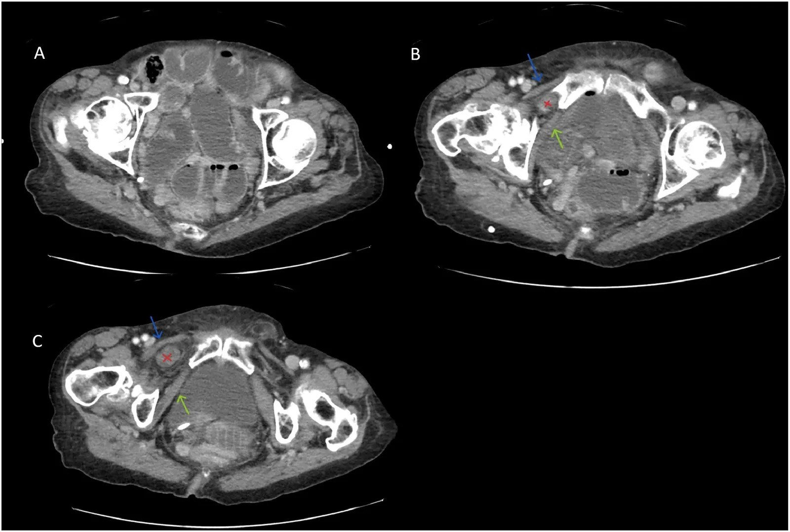
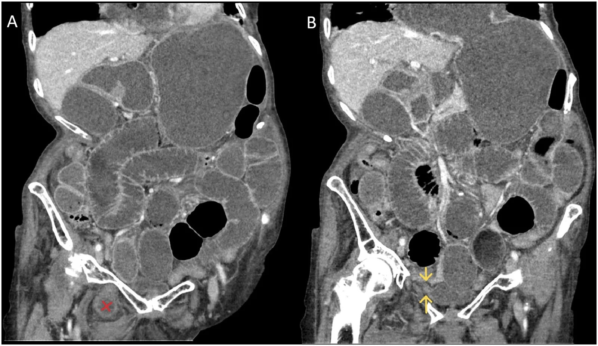
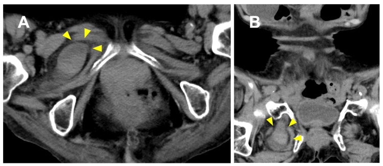

3106 — Thoát vị lỗ bịt: nữ cao tuổi gầy, Howship–Romberg chỉ 15–56%, tử vong 13–47%, CT phát hiện > 90% / Obturator hernia
Tags: pattern:thoat-vi pattern:tac-ruot pattern:quai-ruot-ngoai-phuc-mac pattern:chen-ep-than-kinh vung:chau vung:thanh-bung protocol:CT-3-thi protocol:noi-soi-o-bung incidentaloma:thoat-vi-lo-bit
Mức chắc chắn (certainty): tổng hợp y văn (literature synthesis) — số liệu lấy từ 5 bài open access đã đọc toàn văn: Cureus 2026 (PMC12917865, CC BY 4.0 — 10 ca mổ cấp + thuật toán điều trị), Cureus 2026 (PMC13341281, CC BY 4.0 — ca biến chứng thủng ruột + tổng quan bẫy chẩn đoán), Int J Surg Case Rep 2026 (PMC13045959, CC BY-NC-ND 4.0 — loạt 3 ca + dịch tễ), J Belg Soc Radiol 2024 (PMC11546075, CC BY 4.0 — hình CT 3 bình diện), Radiol Case Rep 2026 (PMC13559990, CC BY 4.0 — hình CT có chú thích giải phẫu), BMC Surg 2026 (PMC13700125, CC BY-NC-ND 4.0 — khoảng cách cơ bịt trong–xương mu dự báo thoát vị). Bài không có ca nguyên văn riêng của nhóm; ca trong quiz là ca nguyên văn của nguồn, giữ đúng chú thích gốc và ghi rõ Fig.
Câu hỏi gốc của bài: bà 82 tuổi, gầy (BMI 18), vào viện vì nôn và bí trung đại tiện 2 ngày; bụng chướng, không sờ thấy khối, chỉ đau mặt trong đùi phải tăng khi duỗi và xoay trong. Siêu âm không kết luận. Vậy: tắc ruột do dính hay do thoát vị? khối ở đâu mà không sờ thấy? khi nào mổ nội soi, khi nào mở, khi nào phải cắt ruột — và vì sao "đau đùi" lại là chìa khóa hình ảnh? Điểm tựa: lỗ bịt (obturator canal) là một đường hầm sau và dưới sàn chậu, nằm giữa cơ lược ở trước và cơ bịt ngoài ở sau — sâu hơn nhiều so với ống bẹn và ống đùi, nên không bao giờ sờ thấy. Trong lỗ bịt có thần kinh bịt (L2–L4); khi túi thoát vị chèn vào, bệnh nhân đau mặt trong đùi/đầu gối (dấu Howship–Romberg) chứ không đau bụng — và chính vì thế, ca này thường bị điều trị như tắc ruột do dính cho tới khi CT được đọc đúng tầng.
1. Tổng quan — vì sao lỗ bịt "mở ra" ở người già gầy, và vì sao chẩn đoán muộn giết người
A. Bệnh học (pathology) và cơ chế:
- Giải phẫu: lỗ bịt nằm ở thành trước–dưới khung chậu, giới hạn bởi xương mu trên, màng bịt (obturator membrane) và các cơ bịt trong/ngoài; ống bịt dài 2–3 cm chứa thần kinh bịt, động mạch và tĩnh mạch bịt. Thoát vị lỗ bịt là quai ruột (hoặc tạng) chui qua ống này ra ngoài khung chậu.
- Vì sao gặp ở nữ cao tuổi, gầy: khung chậu nữ rộng hơn, sinh nhiều lần làm giãn sàn chậu, và mất lớp mỡ tiền phúc mạc quanh ống bịt theo tuổi/sụt cân làm ống bịt "trống" và rộng ra. Kèm tăng áp lực ổ bụng mạn (táo bón, COPD) → đẩy ruột vào chỗ yếu. Trong loạt 10 ca: 100% nữ, tuổi trung vị 88,9 (84–97) (PMC12917865).
- Vì sao đau mặt trong đùi (Howship–Romberg): túi thoát vị chèn ép thần kinh bịt; đau lan mặt trong đùi tới đầu gối, tăng khi duỗi/xoay trong, giảm khi gấp háng. Dấu này chỉ có ở 15–56% ca (PMC12917865) — thiếu dấu hiệu không loại trừ.
- Dấu Hannington–Kiff: mất phản xạ cơ khép (adductor reflex) cùng bên do tổn thương thần kinh bịt — ít được khám nhưng đặc hiệu.
- Vì sao không sờ thấy khối: túi nằm dưới cơ lược, sau ống đùi; khám bụng–bẹn bình thường. Vì vậy không có khối sờ thấy là quy luật, không phải ngoại lệ.
- Vì sao biểu hiện chính là tắc ruột non: 0,2–1,6% các ca tắc ruột non cơ học là do thoát vị lỗ bịt (PMC13045959); 80–90% bệnh nhân vào viện với tắc ruột chứ không phải "khối thoát vị".
- Vì sao có thể tắc "từng đợt" rồi đột ngột nặng: thể Richter (chỉ một phần chu vi ruột chui vào) gây nghẹt mạch máu mà không tắc hoàn toàn, nên bệnh nhân đi lại được, còn trung tiện, rồi thủng/hoại tử đột ngột. Đây là lý do không được chờ "hết tắc" khi đã thấy thoát vị.
- Vì sao chẩn đoán muộn = tử vong: hoại tử ruột khi phải mổ cấp lên tới 40,7% (PMC13341281); tử vong 13–47% — cao nhất trong các loại thoát vị thành bụng (PMC12917865); loạt Đan Mạch toàn quốc ghi tử vong 30 ngày 14% cho mổ cấp (dẫn trong PMC12917865).
- Vì sao cần CT chứ không phải siêu âm: ổ thoát vị sâu trong khung chậu, bị xương và khí ruột che; siêu âm không thấy được. CT là chuẩn, phát hiện trước mổ > 90% (PMC12917865).
B. Ngưỡng định lượng bắt buộc (cửa 1 Argon):
| Đại lượng | Con số đã kiểm chứng | Ý nghĩa thực hành |
|---|---|---|
| Tần suất trong thoát vị thành bụng | 0,07–1% (PMC12917865) | Hiếm, nhưng không được bỏ khi đọc CT tắc ruột ở người già |
| Tần suất trong tắc ruột non cơ học | 0,2–1,6% (PMC13045959) | Là nguyên nhân hiếm nhưng chết người của SBO |
| Giới và tuổi | 100% nữ; tuổi trung vị 88,9 (84–97) trong 10 ca (PMC12917865) | Nữ > 80 tuổi, gầy = nhóm cần đọc kỹ tầng lỗ bịt |
| Dấu Howship–Romberg | 15–56% (PMC12917865) | Thiếu dấu hiệu không loại trừ |
| Tử vong | 13–47% chung (PMC12917865); 14% tử vong 30 ngày khi mổ cấp (registry Đan Mạch, dẫn trong PMC12917865) | Cao nhất trong các thoát vị thành bụng |
| Hoại tử ruột khi mổ cấp | 40,7% (PMC13341281) | Càng chờ, tỉ lệ cắt ruột càng tăng |
| Cắt ruột trong loạt 10 ca | 6/10 = 60% (PMC12917865) | Đa số ca đến muộn đã có ruột không sống |
| Giá trị CT | Phát hiện trước mổ > 90% (PMC12917865) | CT là chuẩn; siêu âm không đủ |
| Thoát vị hai bên / thể hiện lần lượt | 6–25% (PMC12917865) | Luôn đọc cả hai bên và hẹn theo dõi bên còn lại |
| Khoảng cách cơ bịt trong – xương mu (OI–P gap) | ≥ 12,9 mm: nhạy 67%, đặc hiệu 93%, AUC 0,79 cho thoát vị lỗ bịt tình cờ (PMC13700125; 9/79 ca) | Dùng để phân tầng nguy cơ bên đối diện/không triệu chứng |
| Giảm thể tích bằng tay có hướng dẫn siêu âm | Thành công 78% vs 33% khi làm thủ công; cắt ruột ít hơn nếu làm trong 72 giờ đầu (dẫn trong PMC13341281) | Chỉ áp dụng chọn lọc, và không thay thế đánh giá mổ |
| Mổ nội soi vs mở | Giảm biến chứng, OR 0,29 (tổng quan hệ thống, dẫn trong PMC12917865) | TAPP là lựa chọn mặc định khi không nhiễm bẩn |
C. TẠI SAO ảnh trông như vậy (vật lý hình ảnh):
- Vì sao phải đọc tầng ngang ở ngang xương mu: ống bịt nằm dưới–sau ổ cối; trên CT, dấu hiệu chốt là quai ruột có thành, chứa khí/dịch, nằm giữa cơ lược (trước) và cơ bịt ngoài (sau) — tức ngoài khung chậu, thấp hơn ống bẹn. Nếu chỉ đọc các lát từ rốn xuống bàng quang, bạn dừng trước khi tới tầng bệnh.
- Vì sao cần tái tạo tràng (coronal) và dọc (sagittal): quai ruột đi chéo qua ống bịt; trên lát ngang đơn thuần nó chỉ là "một quai ruột trong khung chậu". Tái tạo tràng cho thấy điểm chuyển tiếp (transition point) đúng tại cổ thoát vị — dấu hiệu quyết định tắc do thoát vị chứ không phải do dính.
- Vì sao thấy "beak sign" và "small bowel faeces sign": ruột trên chỗ nghẹt ứ đầy dịch–khí (hình phân ruột non), còn tại cổ thoát vị quai ruột thắt nhọn như mỏ chim; mỡ quanh ống bịt bị đẩy và mất mặt phẳng mỡ giữa cơ lược và cơ bịt ngoài.
- Vì sao khó phân biệt với ổ áp-xe cơ bịt: áp-xe cũng nằm giữa các cơ vùng bịt, nhưng là khối dịch có viền ngấm, khí trong mô, không có thành ruột liên tục với lòng ruột. Điểm khác biệt quyết định: tìm được chỗ quai ruột chui vào và đi ra (điểm chuyển tiếp), không chỉ "có khí trong khối".
- Vì sao thoát vị có thể "biến mất" trên CT lần 2: ruột có thể tự tụt vào hoặc được giảm bằng tay trước khi chụp; khi đó ổ bụng vẫn tắc do dính/niêm mạc phù tại chỗ thoát vị cũ. Có ca thoát vị nghẹt "biến mất" trên CT tuần tự trước khi mổ nội soi (PMC13424230) — nên không loại trừ chỉ vì lần chụp sau không thấy túi.
2. Mẫu hình + chẩn đoán phân biệt theo vị trí (Gamut)
2a. Theo đường đi của túi (giải phẫu — quyết định cách mổ)
- Giữa cơ lược và cơ bịt ngoài (thể "nông", hay gặp nhất trên CT): quai ruột ngay dưới cơ lược, sát xương mu — hình ảnh kinh điển, dễ thấy khi tái tạo tràng.
- Giữa cơ bịt ngoài và cơ bịt trong: túi nằm trong ống bịt, sát thần kinh bịt → đau đùi rõ, khối nhỏ, khó thấy.
- Trong ống bịt / dưới màng bịt: thể hiếm, dễ nhầm với nang/áp-xe vùng bịt.
2b. Theo nội dung túi
- Ruột non (phổ biến nhất) → tắc ruột non.
- Richter (một phần chu vi) → nghẹt không tắc hoàn toàn, dễ bỏ sót.
- Đại tràng, ruột thừa, túi thừa Meckel, bàng quang, buồng trứng → hình ảnh "khối" không điển hình; bàng quang thoát vị gây đái khó/tiểu máu.
- Thoát vị tình cờ (không triệu chứng): thấy khi chụp vì lý do khác; OI–P gap ≥ 12,9 mm giúp phân tầng (PMC13700125).
2c. Theo bối cảnh lâm sàng (gamut "tắc ruột ở người già")
- Thoát vị lỗ bịt (bài này) — không khối sờ thấy, có thể có đau đùi.
- Thoát vị đùi — khối dưới ống bẹn, trong tam giác đùi; trên CT quai ruột trước xương mu, dễ thấy hơn.
- Thoát vị bẹn/bẹn–đùi tái phát — tiền sử mổ, có khối.
- Tắc do dính — tiền sử mổ bụng; không có điểm chuyển tiếp ngoài ổ bụng.
- Áp-xe cơ thắt lưng–chậu / cơ bịt — sốt, đau háng, không có quai ruột.
- Đau thần kinh bịt do nguyên nhân khác (tiểu đường, chèn ép trong khung chậu) — không có tắc ruột, CT không thấy túi.
3. Bảng so sánh phân biệt (ma trận đối chiếu)
| Thực thể (entity) | Hình ảnh điển hình (CT) | Chốt vào (rule-in) | Chốt loại (rule-out) | Gợi ý xác nhận |
|---|---|---|---|---|
| Thoát vị lỗ bịt | Quai ruột giữa cơ lược và cơ bịt ngoài (hoặc trong ống bịt), điểm chuyển tiếp tại cổ, ruột trên giãn | Quai ruột có thành liên tục với lòng ruột, đi qua lỗ bịt, + điểm chuyển tiếp | Không có quai ruột nào ra ngoài khung chậu ở tầng lỗ bịt → loại trừ | CT có cản quang + tái tạo tràng/dọc; đọc cả hai bên |
| Thoát vị đùi | Quai ruột trước xương mu, dưới dây chằng bẹn, trong tam giác đùi; thường thấy khối | Túi ở ống đùi + tĩnh mạch đùi bị đẩy ra ngoài | Túi nằm sau cơ lược, trong lỗ bịt → không phải đùi | CT tràng; siêu âm vùng bẹn có thể thấy |
| Thoát vị bẹn | Túi trên–trong dây chằng bẹn, dọc ống bẹn; sờ thấy khối | Túi xuất phát trên dây chằng bẹn | Túi dưới dây chằng bẹn → không phải bẹn | CT; khám lâm sàng |
| Áp-xe cơ bịt / cơ thắt lưng–chậu | Khối dịch viền ngấm, khí trong cơ, không có thành ruột; sốt, CRP cao | Khối dịch trong cơ + phản ứng viêm | Quai ruột có thành và khí trong lòng, liên tục với ruột → thoát vị | CT; chọc hút/dẫn lưu nếu áp-xe |
| Tắc ruột do dính | Nhiều mức khí–dịch, điểm chuyển tiếp trong ổ bụng, không có túi | Điểm chuyển tiếp trong phúc mạc + tiền sử mổ | Có quai ruột ngoài khung chậu → không phải dính đơn thuần | CT; đối chiếu tiền sử mổ |
| Thoát vị bàng quang qua lỗ bịt | Bàng quang "giọt nước" chui qua lỗ bịt, thành dày, ± sỏi | Thành bàng quang liên tục qua lỗ bịt + đái khó | Cấu trúc chứa khí/dịch dạng ruột → thoát vị ruột | CT có cản quang thì bài tiết |
| Đau thần kinh bịt (không thoát vị) | Không có túi; có thể teo cơ khép, nguyên nhân trong khung chậu | Đau điển hình + không có túi trên CT | Thấy túi/thoát vị → nguyên nhân cơ học | MRI khung chậu; EMG |

Nữ cao tuổi, tắc ruột non. (A) Các quai ruột non giãn trong khung chậu. (B, C) Quai ruột (dấu X đỏ) nằm giữa cơ lược (mũi tên xanh) và cơ bịt ngoài (mũi tên xanh lá) — tức đã ra ngoài khung chậu qua lỗ bịt. Đây là dấu hiệu chốt, chỉ thấy khi đọc tới tầng xương mu. Nguồn: Radiol Case Rep 2026 (PMC13559990), Fig. 3, CC BY 4.0.
Cùng bệnh nhân. (A) Ruột non giãn lan tỏa + quai thoát vị (X đỏ) ở dưới–trong khung chậu phải. (B) Điểm chuyển tiếp (mũi tên vàng) đúng tại cổ thoát vị — chứng minh tắc ruột do thoát vị, không phải do dính. Nguồn: PMC13559990, Fig. 4, CC BY 4.0.
Ca khác: (A) lát ngang — quai ruột nghẹt (đầu mũi tên) trong lỗ bịt phải; (B) tái tạo tràng — quai ruột chui qua lỗ bịt xuống dưới xương mu. Hình này cho thấy vì sao chỉ một bình diện là không đủ: trên lát ngang, quai ruột trông như "ruột trong khung chậu". Nguồn: Cureus 2026 (PMC12917865), Fig. 1, CC BY 4.0.Dấu hiệu trên từng modality (đọc theo thứ tự thực hành)
- X-quang bụng: chỉ thấy mức khí–dịch của tắc ruột non; không thấy thoát vị. X-quang bình thường không loại trừ.
- Siêu âm: có thể thấy quai ruột không di động sâu trong khung chậu, nhưng bị xương che; giá trị chủ yếu để loại trừ sỏi mật/giãn đường mật và đánh giá dịch tự do.
- CT bụng–chậu có cản quang (thì cửa): chuẩn. Đọc ba bình diện, luôn xuống tới bờ dưới xương mu, so hai bên, tìm điểm chuyển tiếp, dấu hiệu nghẹt (thành dày, mất ngấm, khí trong thành, dịch quanh ruột).
- Đo OI–P gap (khi thấy thoát vị tình cờ/không triệu chứng): khoảng cách cơ bịt trong – xương mu trên lát tràng; ≥ 12,9 mm → nguy cơ cao (PMC13700125).
4. Protocol chụp + hệ phân độ/ngưỡng xử trí
- Chỉ định CT: mọi tắc ruột non ở nữ > 70 tuổi, đặc biệt khi không có tiền sử mổ bụng, hoặc có đau mặt trong đùi. Không chờ "thử điều trị bảo tồn" nếu bệnh nhân đau nhiều, CRP tăng, không đỡ sau 6–12 giờ.
- Kỹ thuật: CT bụng–chậu có cản quang tĩnh mạch, lát 1–2 mm, cửa sổ mô mềm; tái tạo tràng và dọc; đọc từ vòm hoành tới bờ dưới xương mu; nếu nghi thoát vị, đo OI–P gap và đọc bên đối diện.
- Đánh giá ruột nghẹt (quyết định cắt ruột): thành ruột mất ngấm, khí trong thành (pneumatosis), khí trong tĩnh mạch cửa, dịch tự do có bọt khí, dấu "ruột khô" — đều là dấu hiệu phải mổ ngay, không chờ nội soi.
- Điều trị (theo thuật toán PMC12917865):
- Nội soi TAPP là lựa chọn mặc định khi không có nhiễm bẩn ổ bụng và ruột còn sống: quan sát cả hai lỗ bịt, kéo ruột vào, đánh giá sống, vá bằng lưới.
- Mở bụng khi nhiễm bẩn nặng (thủng/viêm phúc mạc phân), ruột không sống phải cắt, hoặc bệnh nhân không chịu được bơm hơi; trong nhiễm bẩn, khâu nguyên phát, không đặt lưới.
- Cắt ruột khi hoại tử/thủng; không cố giảm bằng tay nếu có dấu nghẹt/thủng.
- Giảm bằng tay có hướng dẫn siêu âm (chọn lọc, trong 72 giờ đầu): thành công 78% vs 33% so với thủ công, giảm tỉ lệ cắt ruột (PMC13341281) — nhưng phải mổ nội soi kiểm tra sau đó, không coi là điều trị triệt để.
flowchart TD
A[Nu cao tuoi gay: tac ruot non, khong khoi so thay] --> B[CT bung-chau co can quang, lat 1-2 mm, tai tao trang va doc]
B --> C{Co quai ruot giua co luoc va co bit ngoai hoac trong ong bit?}
C -->|Khong| D[Tim nguyen nhan khac: dinh, u, thoat vi khac]
C -->|Co| E[Doi chieu diem chuyen tiep tai co thoat vi + doc ca hai ben]
E --> F{Dau hieu nghet: mat ngam thanh ruot, khi trong thanh, dich co bot?}
F -->|Co| G[Mo cap: cat ruot khong song + khao nguyen phat]
F -->|Khong| H{Co nhiem ban o bung?}
H -->|Khong| I[Noi soi TAPP: keo ruot, danh gia song, va luoi]
H -->|Co| G
I --> J[Theo doi ben doi dien: 6-25 phan tram co thoat vi hai ben]
G --> J
5. Biến thể bình thường và cạm bẫy
- Biến thể bình thường:
- Mỡ trong ống bịt ở người trẻ bình thường; không gọi là thoát vị khi không có quai ruột/tạng.
- Thoát vị lỗ bịt tình cờ, không triệu chứng (thấy khi chụp vì lý do khác) — không phải chỉ định mổ cấp; đánh giá OI–P gap, theo dõi, mổ chương trình nếu có triệu chứng.
- Bất đối xứng nhẹ kích thước ống bịt hai bên là bình thường.
- Cạm bẫy (pitfall):
- Không đọc tới tầng xương mu: đây là lỗi số 1. CT "tắc ruột non, không rõ nguyên nhân" ở nữ già thường là thoát vị lỗ bịt bị bỏ qua vì dừng lát cắt sớm.
- Đọc lát ngang đơn thuần: quai ruột trong lỗ bịt trông như ruột trong khung chậu; luôn tái tạo tràng/dọc.
- Quy tắc "không có khối = không thoát vị": sai. Thoát vị lỗ bịt không bao giờ sờ thấy.
- Bỏ qua đau mặt trong đùi ở bệnh nhân tắc ruột: Howship–Romberg chỉ có 15–56%, nhưng khi có thì gần như chẩn đoán.
- Bỏ sót thể Richter: bệnh nhân còn trung tiện, bụng mềm, nhưng ruột đã nghẹt; không chờ "hết tắc".
- Chỉ đọc một bên: 6–25% có thoát vị hai bên hoặc xuất hiện lần lượt — phải ghi rõ bên đối diện.
- Thoát vị "biến mất" trên CT lần 2: ruột tự tụt/được giảm, nhưng tắc vẫn còn do phù/dính tại chỗ; không loại trừ (ca PMC13424230).
- Nhầm với áp-xe cơ bịt: áp-xe có khối dịch + khí trong cơ, không có thành ruột; thoát vị có quai ruột liên tục và điểm chuyển tiếp.
- Đặt lưới trong viêm phúc mạc phân: nguy cơ nhiễm lưới; trong nhiễm bẩn khâu nguyên phát rồi tính mổ chương trình.
6. Tự lượng giá — Blind Quiz ngay trên trang tĩnh
Ca 1 — Nữ 84 tuổi, gầy, nôn 2 ngày, bụng chướng, đau mặt trong đùi phải. Nhìn CT ngang, mô tả trước khi mở đáp án.
- Gợi ý lâm sàng: không có tiền sử mổ bụng; khám bẹn và đùi không thấy khối.
- Câu hỏi: (1) quai ruột nằm ở đâu so với cơ lược và cơ bịt ngoài? (2) vì sao không sờ thấy khối? (3) cần tái tạo bình diện nào để chốt?
Bấm để hiện đáp án (findings + chẩn đoán)
- Findings: (A) ruột non giãn; (B, C) quai ruột (X đỏ) nằm giữa cơ lược (mũi tên xanh) và cơ bịt ngoài (mũi tên xanh lá) — đã ra ngoài khung chậu qua lỗ bịt.
- Chẩn đoán: thoát vị lỗ bịt nghẹt (incarcerated obturator hernia) gây tắc ruột non.
- Vì sao không sờ thấy: túi nằm sau cơ lược, sâu hơn ống bẹn/ống đùi.
- Bình diện cần: tái tạo tràng/dọc để thấy điểm chuyển tiếp tại cổ thoát vị.
- Nguồn ảnh: Radiol Case Rep 2026 (PMC13559990), Fig. 3, CC BY 4.0.
Ca 2 — Cùng bệnh nhân: tìm điểm chuyển tiếp và quyết định điều trị.
- Câu hỏi: (1) mũi tên vàng chỉ gì? (2) dấu hiệu nào trên CT buộc mổ mở thay vì nội soi? (3) nếu ruột còn sống và không nhiễm bẩn, chọn đường nào?
Bấm để hiện đáp án
- (A) ruột non giãn + quai thoát vị; (B) điểm chuyển tiếp tại cổ thoát vị (mũi tên vàng) — chốt tắc do thoát vị.
- Mổ mở khi: khí trong thành ruột/mất ngấm thành, dịch có bọt khí, thủng/viêm phúc mạc phân, hoặc bệnh nhân không chịu được bơm hơi.
- Nếu ruột sống, không nhiễm bẩn: nội soi TAPP — quan sát cả hai lỗ bịt, kéo ruột, vá lưới; giảm biến chứng so với mở (OR 0,29).
- Nguồn ảnh: PMC13559990, Fig. 4, CC BY 4.0.
Ca 3 — Nữ 78 tuổi, tắc ruột non; CT ngang và tràng cho hình dưới. Bên đối diện thì sao?
- Câu hỏi: (1) mô tả (A) và (B); (2) vì sao phải đọc bên đối diện? (3) yếu tố nào khiến bệnh nhân này dễ thoát vị lỗ bịt?
Bấm để hiện đáp án
- (A) lát ngang: quai ruột nghẹt trong lỗ bịt phải (đầu mũi tên); (B) tái tạo tràng: quai ruột chui qua lỗ bịt, dưới xương mu.
- Đọc bên đối diện vì 6–25% có thoát vị hai bên hoặc xuất hiện lần lượt; bên còn lại có thể đã có túi nhỏ hoặc OI–P gap ≥ 12,9 mm (nguy cơ cao).
- Yếu tố dễ gặp: nữ, cao tuổi, gầy, sinh nhiều, tăng áp lực ổ bụng mạn (táo bón/COPD).
- Nguồn ảnh: Cureus 2026 (PMC12917865), Fig. 1, CC BY 4.0.
Bài liên quan chéo
- 162 – Tắc ruột non: tiếp cận hình ảnh và điểm chuyển tiếp — khung chung của SBO
- 160 – Bụng cấp: tiếp cận 6 bước trên CT — thứ tự đọc và "không dừng sớm"
- 1928 – Áp-xe cơ chậu ở thai phụ — "kẻ bắt chước" khối dịch vùng chậu
- 3061 – Di căn lỗ trocar sau PTNS — khối thành bụng sau mổ, cùng vị trí lỗ
- 3097 – Nang túi tinh/Zinner — khối dịch tiểu khung, khác hoàn toàn về xử trí
- 100 – Tổng quan hệ Bụng
Ảnh
- Tên file theo quy ước
3106_thoat-vi-lo-bit_CT_SourceID.jpg; nguồn + giấy phép từng ảnh trongimages/CREDITS.md. - Ba ảnh đều CC BY 4.0 → dùng nguyên bản, ghi công; không tạo ảnh ghép trong bài này vì các hình đã là chuỗi nhiều khung của cùng một ca.
- Không có ảnh nào từ Radiopaedia/AuntMinnie (chỉ dẫn link ở
sources.md).
Không dùng để chẩn đoán độc lập khi chưa có người hướng dẫn.